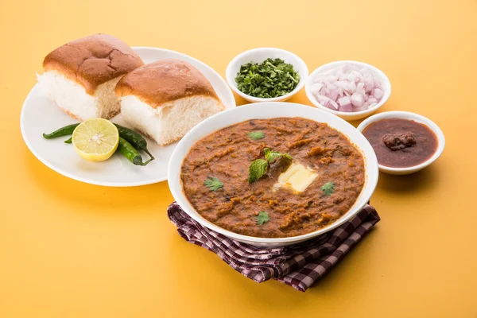

Gulab Jamun
Ingredients
- Milk Powder
- Flour
- Sugar
- Baking Powder
- Ghee
Recipe
- Step 1: Combine sugar and water in a pan and bring to a boil to create the syrup. Remove from heat, add cardamom, and set aside to cool.
- Step 2: In a mixing bowl, combine flour, sooji, baking powder, and baking soda. Mix gently to form a soft dough, avoiding over-kneading.
- Step 3: Divide the dough into 30-35 portions and gently shape them into round balls.
- Step 4: Heat oil on low flame and fry the balls until they turn golden brown.
- Step 5: Transfer the fried Gulab Jamuns into the cooled sugar syrup. Once all the Gulab Jamuns are added, bring the syrup to a boil again briefly, then remove from heat.
- Step 6: Enjoy your homemade Gulab Jamun warm, garnished with your favourite toppings.

Pav Bhaji
Ingredients
- Potato
- Carrots
- Cauliflower
- Green Peas
- Onion
- Tomatoes
Recipe
- Rinse, peel and cube 3 medium or 2 larger potatoes (about 300 grams). Mine were about 1½ to 2 cups when measured. Clean 1 cup cauliflower florets (optional). Rinse ½ to ¾ cups green peas. If you want you can also use 1 medium carrot (Half cup chopped).
- For making masala, chop 1 medium onion (¾ to 1 cup chopped) , 2 medium tomatoes (¾ to 1 cup chopped), half bell pepper (½ cup chopped) and 1 green chilli. Also make 1 tablespoon ginger garlic paste. Keep all of these aside.
- Mix well and simmer for a while to bring out the flavor of masala. Taste test and add more salt if you want. You can also add more chili powder at this stage for brighter color. Also for more flavor you may add more pav bhaji masala if you want.
- Add ¾ tablespoon kasuri methi. When it reaches the desired consistency, add chopped coriander leaves. switch off. Slightly cool down and add some lemon juice before serving.
- Step 6: Enjoy your homemade Pav Bhaji .
